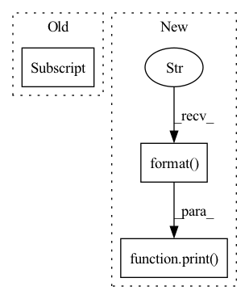

Pattern ID :1620
Before Change
lw = [float(w) for w in config["lw"].split(",")]
assert len(config["loss"]) == len(lw), "Length of loss and loss_weight should be equal."
self.losses = config["loss"]
self.lw = lw
def forward(self, preds, target, config):
After Change
self.loss_cluster = {}
for out_name, loss_casket in loss_config.items():
self.loss_cluster[out_name] = loss_worker(loss_casket[0], loss_casket[1:])
print( "{} loss for output \"{}\".".format( self.loss_cluster[out_name].loss_print, out_name))
def forward(self, preds, target, config):
loss = 0
In pattern: SUPERPATTERN
Frequency: 3
Non-data size: 3
Instances Fragment ID: 4417104
Project Name: moothes/salod
Commit Name: f7e568383ce7d5dd4f7582e346e1d86bb6a4b171
Time: 2022-08-18
Author: zhouhuajun123@126.com
File Name: base/loss.py
M Class Name: Loss_factory
N Class Name: Loss_factory
M Method Name: __init__(2)
N Method Name: __init__(2)
M Parent Class: nn.Module
N Parent Class: nn.Module
M File Name: base/loss.py
N File Name: base/loss.py
M Start Line: 143
M End Line: 150
N Start Line: 190
N End Line: 195
Before Change
if use_batch_norm:
self.networks.extend([curr_network, act_cls()])
else:
bn_layer = torch.nn.BatchNorm1d(hidden_dims[i+1] )
self.networks.extend([curr_network, act_cls(), bn_layer])
final_network = get_network([hidden_dims[-1],out_dim])
self.networks.extend([final_network, out_act_cls()])After Change
class QNetwork(nn.Module):
def __init__(self,input_dim, out_dim, hidden_dims, act_fn="relu", out_act_fn="identity", **kwargs):
print( "redundant parameters for Q network: {}".format( kwargs))
super(QNetwork, self).__init__()
if type(hidden_dims) == int:
hidden_dims = [hidden_dims]
hidden_dims = [input_dim] + hidden_dims Fragment ID: 4417101
Project Name: x35f/unstable_baselines
Commit Name: a5871d3488b73457316980bf84fb817d1081de6d
Time: 2021-11-20
Author: 1621322691@qq.com
File Name: common/networks.py
M Class Name: QNetwork
N Class Name: QNetwork
M Method Name: __init__(6)
N Method Name: __init__(7)
M Parent Class: nn.Module
N Parent Class: nn.Module
M File Name: common/networks.py
N File Name: common/networks.py
M Start Line: 47
M End Line: 63
N Start Line: 48
N End Line: 59
Before Change
if use_batch_norm:
self.networks.extend([curr_network, act_cls()])
else:
bn_layer = torch.nn.BatchNorm1d(hidden_dims[i+1] )
self.networks.extend([curr_network, act_cls(), bn_layer])
final_network = get_network([hidden_dims[-1],out_dim])
self.networks.extend([final_network, out_act_cls()])After Change
class VNetwork(nn.Module):
def __init__(self,input_dim, out_dim, hidden_dims, act_fn="relu", out_act_fn="identity", **kwargs):
super(VNetwork, self).__init__()
print( "redundant parameters for V network: {}".format( kwargs))
if type(hidden_dims) == int:
hidden_dims = [hidden_dims]
hidden_dims = [input_dim] + hidden_dims
self.networks = [] Fragment ID: 4417100
Project Name: x35f/unstable_baselines
Commit Name: a5871d3488b73457316980bf84fb817d1081de6d
Time: 2021-11-20
Author: 1621322691@qq.com
File Name: common/networks.py
M Class Name: VNetwork
N Class Name: VNetwork
M Method Name: __init__(6)
N Method Name: __init__(8)
M Parent Class: nn.Module
N Parent Class: nn.Module
M File Name: common/networks.py
N File Name: common/networks.py
M Start Line: 74
M End Line: 90
N Start Line: 73
N End Line: 83